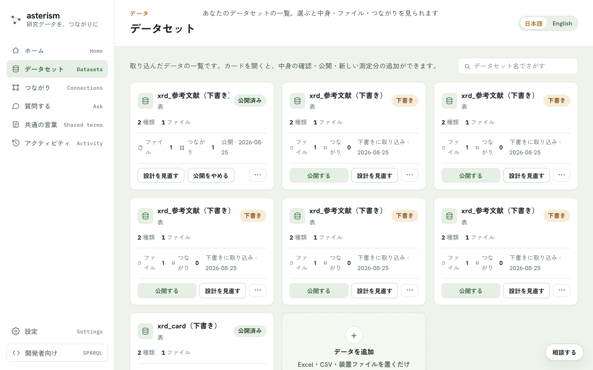
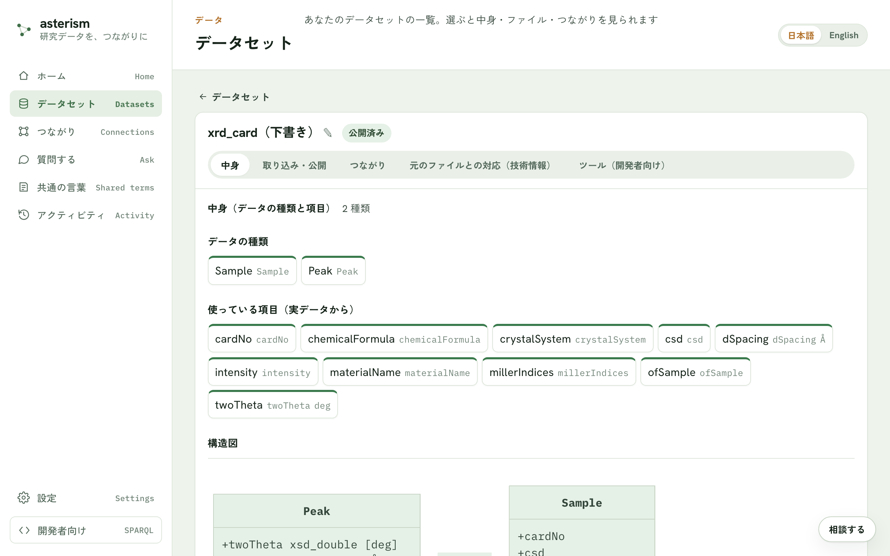

データセットの管理 — 公開・追記・見直し
取り込んだデータの一覧や、公開後の育てかた・見直しかたをまとめます。公開までの流れそのものは getting-started.md を参照してください。
データセットの一覧
メニューの「データセット」から、取り込んだデータの一覧を見られます。それぞれの状態（公開済み・下書き・取り込み前）が並び、名前でさがすこともできます。カードを開くと詳細画面に進みます。

詳細画面のタブ
データセットの詳細画面には、次のタブがあります。
- 「中身」タブ — データの種類と項目、構造図、気になる点
- 「取り込み・公開」タブ — ファイル一覧と、取り込み・公開の操作
- 「つながり」タブ — 他のデータセットとのつながり
- 「ツール（開発者向け）」タブ — このデータで答えられる問い合わせの一覧
- 「元のファイルとの対応（技術情報）」タブ — 変換ルールなどの技術情報

公開する・公開を更新する
「公開する」ボタンを押すと、このサーバを使う人が質問したときに、このデータが出典つきで引用されるようになります（それまでは誰にも見えません）。新しい下書きができている状態では「公開を更新する」ボタンに切り替わり、押すと質問への回答が新しいデータを引用するようになります。切り替え中も回答は途切れません。
新しい測定分を足す（追記）
同じ装置から出た新しいファイルを、そのまま置いて足せます。すでにある行は二重になりません。ファイル名は最初に置いたファイルと同じにしてください。足した分は公開済みデータにすぐ加わります。
全部を差し替える
新しいファイルでデータを作り直します。作り直している間も、今のデータへの回答は途切れません。できあがったら、「公開を更新する」ボタンで新しいデータに切り替わります。
文書を追加
公開済みのデータセットに、Word / PDF / XML の文書をもう 1 つ足せます。足した文書は文ごとに分けて公開済みデータにそのまま加わり、「質問する」から検索・引用できるようになります（議事録をためていく用途に向いています）。
設計を見直す
「設計を見直す」ボタンから、項目の意味の確認に戻れます。直した内容は、同じデータセットのまま新しい版として下書きに作り直され、公開すると切り替わります。「取り込み・公開」タブでは、見直し前の版や差分を含む変更履歴も確認できます。
公開をやめる・もう一度公開する・削除
「公開をやめる」ボタンを押すと、このデータは質問への回答から外れます。データと ID は残るので、すでに引用されたリンクは壊れません。あとで「もう一度公開する」ボタンで戻せます。
削除は、未公開のデータセットであれば安全に行えます。公開中のデータセットを削除しようとすると、確認の案内が表示されます。
気になる点
「中身」タブには、つながっていないデータ・使われていない列・数値が文字として記録されている列などの指摘が表示されます。指摘の内容をもとに、AI に直してもらう導線もここにあります。
取り込みの記録
メニューの「アクティビティ」から、いつ・何が・どれだけ入ったかを確認できます。「データを追加」での取り込みや、公開済みデータへの追記が1 回ごとに 1 行並びます。
関連
- 公開までの流れは getting-started.md
- データセットどうしのつながりは crosswalk.md